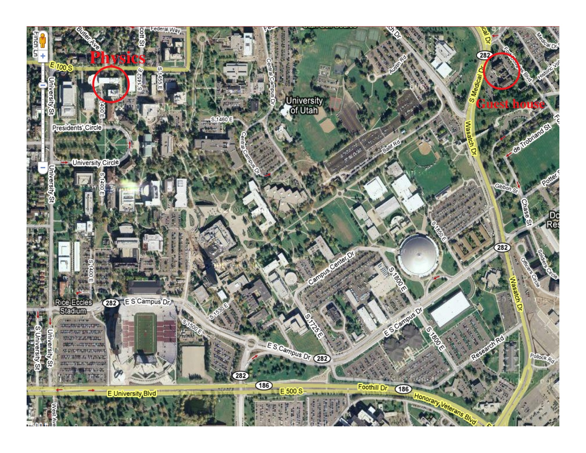

How to get here
Department of Physics, University of Utah:
115 South 1400 East, Salt Lake City, UT 84112-0830; phone 801-581-6901.
Physics building is known as JFB (James Fletcher building), shown here on the University map.
Most of our speakers stay at the University Guest House, which is conveniently located right on the campus. To get there, take a taxi cab from the airport (in case driver is not certain where to go, the general direction is towards the university hospital) - the ride is about 25 minutes (and costs about $30). Additional directions are here. The Department is about 15 minutes walk (take Legacy bridge over the street, then follow straight down towards Marriott Library, then turn right and walk past the Union Center-- consult reception desk at the Guest House for more details if desired) or 5 minutes ride (one of us will pick you up at the Guest House).
